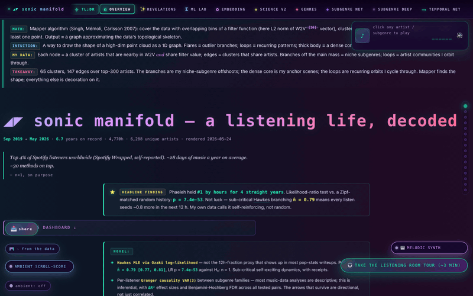

<!-- sonicManifold demo embed — drop into blog post / social share -->
<figure style="text-align:center;margin:2em auto;max-width:800px">
  <video
    src="demo.mp4"
    poster="demo_preview.png"
    width="800"
    autoplay
    loop
    muted
    playsinline
    style="width:100%;border-radius:8px;box-shadow:0 4px 24px rgba(0,0,0,.5)"
  >
    <!-- GIF fallback for clients that don't support video -->
    
  </video>
  <figcaption style="margin-top:.75em;font-size:.875em;color:#666">
    <a href="https://astralcrest.github.io/sonicManifold/" target="_blank" rel="noopener">
      sonic manifold — a listening life, decoded ↗
    </a>
  </figcaption>
</figure>
